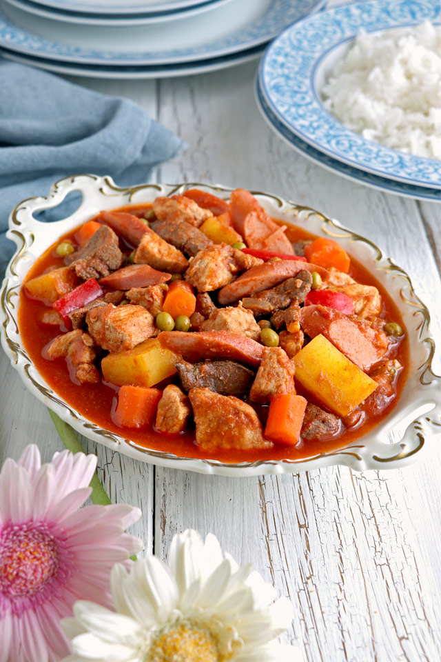
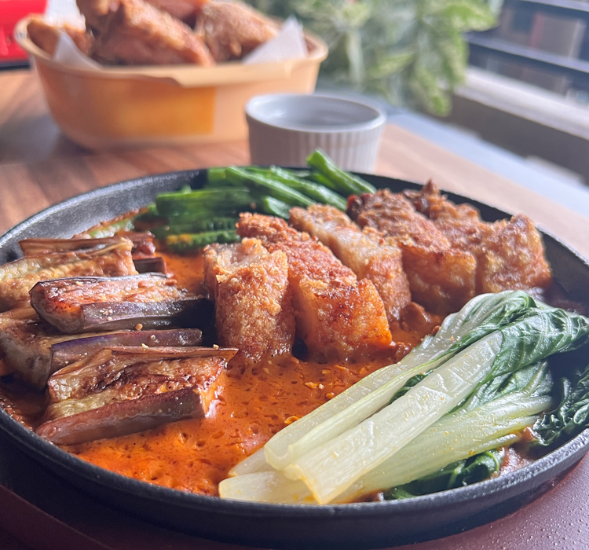

| MEAL PLANNER | ||||||
|---|---|---|---|---|---|---|
| DAYS | BREAKFAST | LUNCH | DINNER | |||
| MONDAY | Sinigang | | Fried Fish | Ampalaya | ||
| TUESDAY | | Eggs w/ Pandesal | | Adobo | | Nilaga |
| WEDNESDAY | | Ham and Hotdog | Sandwiches | | Chopsuey | |
| THURSDAY | | Misua Soup w/ Patola | | Bicol Express |  | Menudo |
| FRIDAY | | Giniling |  | Kare-kare | | Tofu Vegetable Stir Fry |
References:
Monday
Tuesday
Wednesday
Thursday
Friday